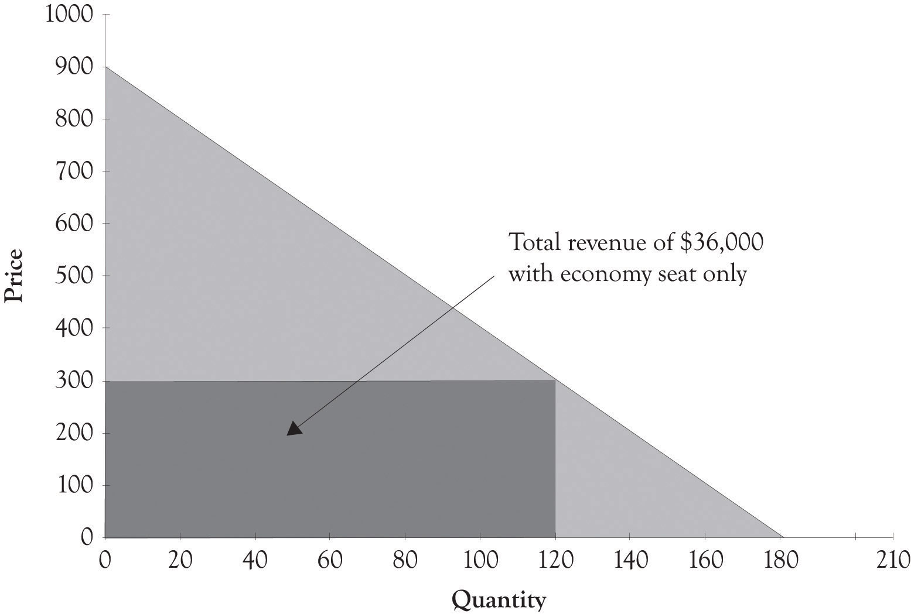
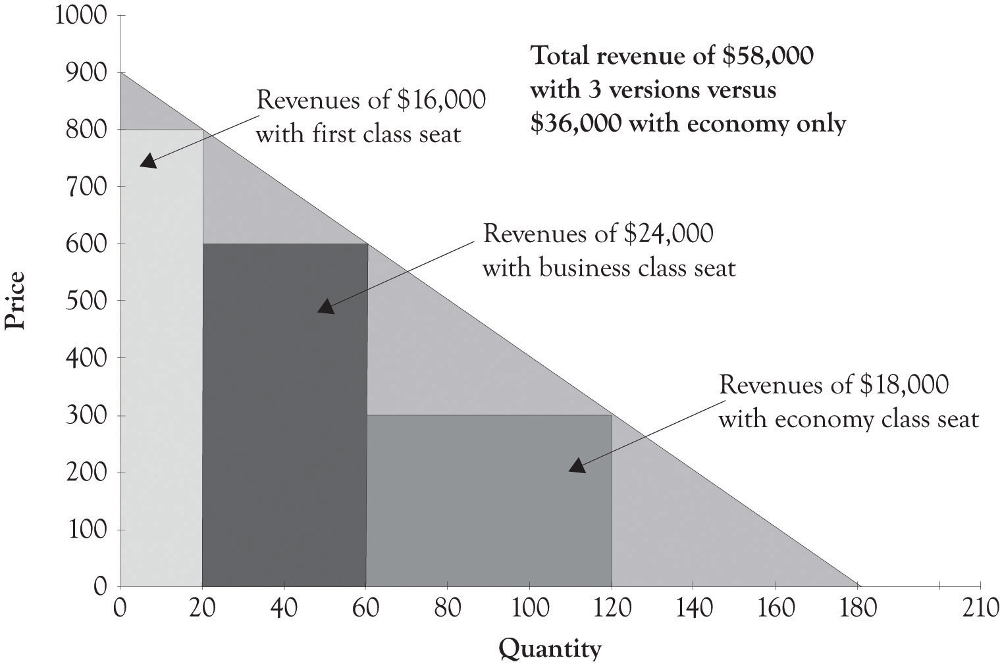

As noted by Varian and Shapiro in 1998, the idea behind versioningTo engage in differential pricing by offering different versions of a product. is to engage in differential pricing by offering different versions of a product. Figure 2.4 "Second-Degree Price Discrimination" illustrates the versioning concept. Ideally, the different versions should be perceived as having different levels of quality. We also maintain that the number of versions should be related to the number of distinct market segments. In many instances, it is difficult to identify the optimum number of market segments, and it is also difficult to develop products for each market segment. Goldilocks pricingA rule of thumb that suggests you start out with three price levels. is a rule of thumb that suggests that you should start out with three price levels. The idea behind Goldilocks pricing is that 1 product is too few, 10 products too many, and 3 is just the right amount.One of my colleagues says that 2 is the perfect number because many consumers will delay purchase when there are more than two choices because of the excess demands on cognitive processing. There is evidence that having too many choices places a significant cognitive and emotional burden on the ability of individuals to make decisions.Schwartz (2003). It is my experience that somewhere between two and four versions should be offered. A subsequent chapter will illustrate how Goldilocks pricing has been implicitly or explicitly implemented by a variety of companies. The key to versioning is to try to anticipate customer’s needs and then to try and develop organizational competencies for delivering those products and services.
Figure 2.4 Second-Degree Price Discrimination

As noted earlier and illustrated in the next chapter, versioning also leads to increased revenues and profits. You will leave money on the table if you do not have a high-end product for consumers who are not price-sensitive. In addition, you will not sell any product to customers who are very price-sensitive. There are several additional compelling reasons for versioning. By having several products, you can experiment and watch economic behavior as consumers will focus on the features and products that are most desirable. This sort of experimentation is the basis of monopolistic competition and the mechanism that allows the entrepreneur to successfully compete. Product versions can be generated in a variety of ways, including distinct product features, product design, and product promotions such as product rebates and product availability, for example, when the product is delivered.
In this book, we will refer to three foundational versions of products. The high-end product is referred to as a Midas version and it is targeted toward nonprice-sensitive consumers. Midas productsHigh-end product targeted toward nonprice-sensitive consumers. are extravagantly engineered and contain advanced features and attributes. Hermes productsProducts targeted toward price-sensitive consumers and are frugally engineered and designed with basic features. are targeted toward price-sensitive consumers and are frugally engineered and designed with basic features. Atlas productsDesigned for the middle ground or the mainstream. They not only have basic features, but also advanced features, and are priced between Midas and Hermes versions. are designed for the middle ground or the mainstream. They not only have basic features, but also have several advanced features, and are priced between Midas and Hermes versions. More details on the motivation behind the three versions will be presented throughout the book.
An example of versioning is found in the airline industry. Airline companies usually provide two or three levels of seats, such as economy class seats, business class seats, and first-class seats. The first-class tickets are the most expensive and they offer customers the highest quality service. Consumers who are willing to pay for the extra services will purchase the first-class ticket. On the other hand, customers who purchase the economy-class ticket receive a lower level of service. But they are not willing to pay for the extra services and features offered to the first-class and business-class customers. As illustrated in the hypothetical example in Figure 2.5 "Revenues Generated by Only Offering Economy Seats", if an airline offers only an economy ticket at a set price of $300, then the revenues generated would be $36,000. However, as illustrated in Figure 2.6 "Versioning Airline Seats Generates Additional Revenue", if the airline offers an economy ticket at $300, a business-class ticket for $600, and first-class tickets for $800, then the company could potentially generate additional revenues of $22,000.
BundlingA special type of versioning that often involves information content that is in a digital format. is a special type of versioning that often involves information content that is in a digital format. Online and offline newspapers, encyclopedias, and magazines are examples of information bundles. Software in addition to having versions is also bundled. Examples include the so-called office bundles containing word processing, presentation, and spreadsheet software and the tax software bundles that include electronic filing, state filing, as well as additional tax preparation features.
Figure 2.5 Revenues Generated by Only Offering Economy Seats
Bundling strategies frequently appear in markets for informational goods. As you can imagine, the marginal cost of information goods is theoretically close to zero. Let us imagine four consumers who are interested in buying two computer games such as the Football Madness game and the Soccer is My Life game. Suppose also that the four customers (Bob, Carol, Ted, and Alice) are willing to pay $18, $10, $8, and $2, respectively, for Football Madness. Suppose also that Bob, Carol, Ted, and Alice have different reservation prices for the Soccer is My Life game. Bob would pay $3 for the game, Carol would pay $16, Ted would pay $17, and Alice would pay $19 for the soccer game. If the retail cost of both games is $16, then none of these individuals would buy both games. In this case, Bob would only buy Football Madness and Carol, and Ted and Alice would only buy Soccer is My Life. In this scenario, the seller would only obtain $64 in revenues (4 × $16). However, if the seller bundles the two titles together and sells the total package for $20, then the seller could generate $80 in revenues. The bundled product price is under what each individual was willing to pay for the two games (Bob: $21, Carol: $26, Ted: $25, and Alice: $21). In this case, the seller is better off and the four consumers are happy because of the bundling strategy. Bundling is particularly useful with digital goods because the cost to reproduce digital copies is trivial.
Figure 2.6 Versioning Airline Seats Generates Additional Revenue
